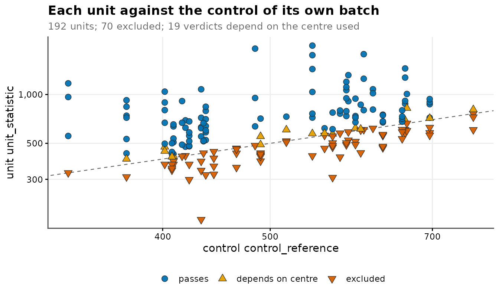
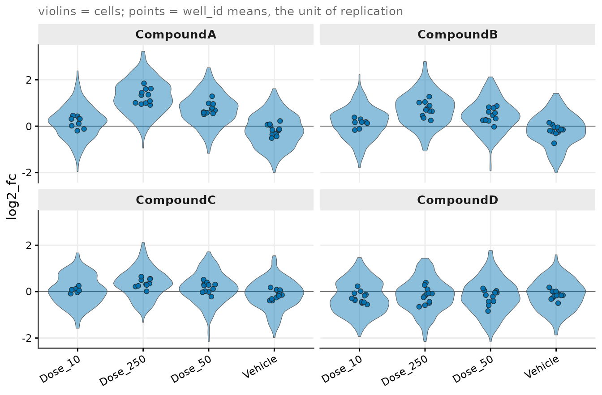
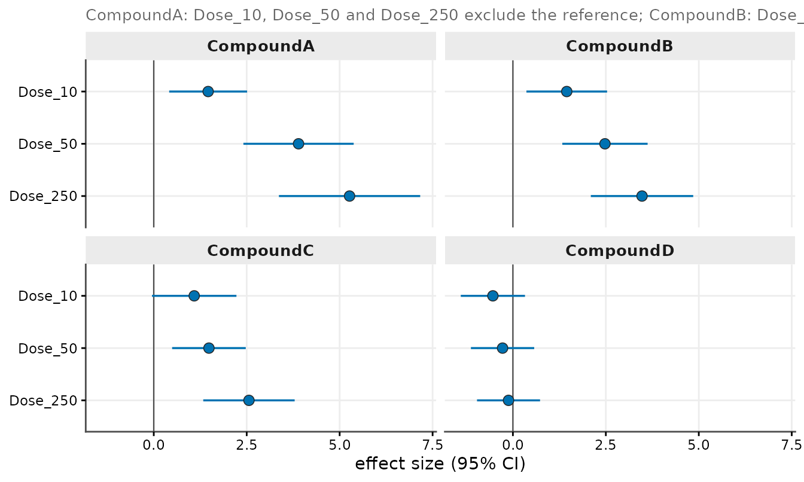
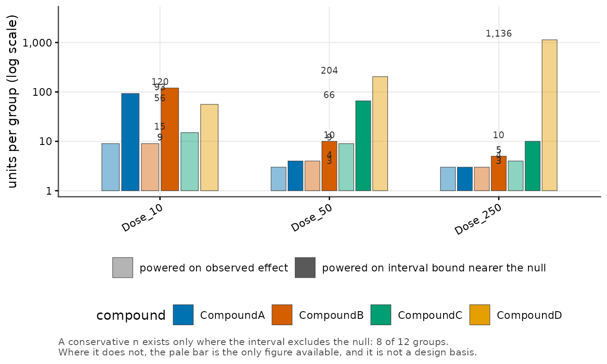

End to End: From Segmented Exports to a Finished Report
Source:vignettes/end-to-end.Rmd
end-to-end.Rmdvignette("getting-started") runs the short path on a
single plate. This vignette runs the long one, in the order the package
is meant to be used:
files on disk -> units -> quality control -> standardization
-> effect sizes at two levels -> sample size -> reportEvery stage is a separate exported function. Nothing here is a wrapper that hides a decision, because each of these stages is a decision, and the package’s job is to make it visible and auditable afterwards.
All data below is synthetic and generated in-session under an explicit seed.
1. Ingest: the design lives in the tree and the file name
Segmentation software writes one export per acquisition, and the
design facts that matter — which compound, which experiment, which
plate, which pre-treatment interval, which exposure level — are usually
encoded in the directory layout and the file name rather than inside the
file. cr_example_exports() writes such a tree so the ingest
functions can be demonstrated on real files.
root <- file.path(tempdir(), "cr_vignette_exports")
files <- cr_example_exports(root, seed = 42, n_cells = 60)
basename(files)
#> [1] "CompoundA_15min_vehicle_1.csv"
#> [2] "CompoundA_15min_250uM_treated_1.csv"
#> [3] "CompoundA_15min_250uM_treated_1.1 (split).csv"
#> [4] "CompoundA_60min_vehicle_2.csv"
#> [5] "CompoundA_60min_250uM_treated_2.csv"
#> [6] "CompoundA_60min_250uM_treated_2 (repeat).csv"
#> [7] "CompoundA_60min_250uM_treated_2.2.csv"
#> [8] "CompoundB_15min_vehicle_1.csv"
#> [9] "CompoundB_15min_250uM_treated_1.csv"
#> [10] "CompoundB_15min_250uM_treated_1 (no reagent).csv"Three things in those names are not decoration:
-
(split)marks the second pass of a two-pass acquisition. Left unmerged, that unit contributes twice the cells of its neighbours. -
(repeat)marks a repeated read of a unit that already has a plain sibling file. -
_2.2looks like a second pass of unit2, but is a different physical unit on a different plate. It must not merge. -
(no reagent)marks the specificity arm, where the detection reagent was left out. Those acquisitions are never samples.
Column names, path levels, file-name grammar
Three small declarations describe the tree. Each is an object you can print and check before a single file is read.
map <- cr_column_map(
exact = c("Event Label" = "cell_id",
"Position X [px]" = "x",
"Position Y [px]" = "y",
"Nuclei - Signal Mean" = "nuclear_signal",
"Target - Signal Mean" = "target_signal"),
prefix = c("^Nuclei - Area" = "area")
)
grammar <- cr_filename_grammar(
tokens = list(interval = "[0-9]+min",
dose = "[0-9]+uM",
mode = "treated|vehicle"),
defaults = list(dose = "0uM", mode = "vehicle"),
core_patterns = c("^[0-9]+min_vehicle$", "^[0-9]+min_[0-9]+uM_treated$"),
prefix_strip = c("CompoundA", "CompoundB")
)
markers <- cr_marker_rules(
merge_unit = "\\(split\\)",
partial_plate = "\\(partial\\)",
omitted_reagent = "\\(no reagent\\)",
reacquisition = "\\(repeat\\)"
)
spec <- cr_path_spec(
levels = c("run", "compound", "experiment", "plate"),
grammar = grammar,
markers = markers
)
spec
#> <cr_path_spec>
#> • levels: run / compound / experiment / plate
#> • grammar tokens: interval, dose, mode
#> • markers: set
#> • strict: TRUEcore_patterns is the part worth pausing on. The
absence of a token is meaningful here: a name with no exposure
token is a vehicle control. A typo in a token therefore matches nothing,
falls through to the default, and silently reclassifies a treated
acquisition as a control — pulling it into the control denominator of
its own batch. The whitelist turns that silent misclassification into a
hard error.
cells <- cr_read_exports(root, column_map = map, spec = spec, progress = FALSE)
dim(cells)
#> [1] 600 25
all(cells$parse_ok)
#> [1] TRUEEach file now carries the design facts recovered from its path and its name. The tokens:
per_file <- unique(cells[, c("source_file", "compound", "plate", "interval",
"dose", "mode", "replicate", "merge_unit",
"reacquisition", "omitted_reagent")])
per_file$source_file <- sub("\\.csv$", "", per_file$source_file)
per_file[, c("source_file", "interval", "dose", "mode", "replicate")]
#> # A tibble: 10 × 5
#> source_file interval dose mode replicate
#> <chr> <chr> <chr> <chr> <chr>
#> 1 CompoundA_15min_250uM_treated_1.1 (split) 15min 250uM treated 1.1
#> 2 CompoundA_15min_250uM_treated_1 15min 250uM treated 1
#> 3 CompoundA_15min_vehicle_1 15min 0uM vehicle 1
#> 4 CompoundA_60min_250uM_treated_2 (repeat) 60min 250uM treated 2
#> 5 CompoundA_60min_250uM_treated_2.2 60min 250uM treated 2.2
#> 6 CompoundA_60min_250uM_treated_2 60min 250uM treated 2
#> 7 CompoundA_60min_vehicle_2 60min 0uM vehicle 2
#> 8 CompoundB_15min_250uM_treated_1 (no reagent) 15min 250uM treated 1
#> 9 CompoundB_15min_250uM_treated_1 15min 250uM treated 1
#> 10 CompoundB_15min_vehicle_1 15min 0uM vehicle 1and the markers, each one a typed flag rather than a string somebody has to remember:
per_file[, c("source_file", "merge_unit", "reacquisition", "omitted_reagent")]
#> # A tibble: 10 × 4
#> source_file merge_unit reacquisition omitted_reagent
#> <chr> <lgl> <lgl> <lgl>
#> 1 CompoundA_15min_250uM_treated_1.1 (spli… TRUE FALSE FALSE
#> 2 CompoundA_15min_250uM_treated_1 FALSE FALSE FALSE
#> 3 CompoundA_15min_vehicle_1 FALSE FALSE FALSE
#> 4 CompoundA_60min_250uM_treated_2 (repeat) FALSE TRUE FALSE
#> 5 CompoundA_60min_250uM_treated_2.2 FALSE FALSE FALSE
#> 6 CompoundA_60min_250uM_treated_2 FALSE FALSE FALSE
#> 7 CompoundA_60min_vehicle_2 FALSE FALSE FALSE
#> 8 CompoundB_15min_250uM_treated_1 (no rea… FALSE FALSE TRUE
#> 9 CompoundB_15min_250uM_treated_1 FALSE FALSE FALSE
#> 10 CompoundB_15min_vehicle_1 FALSE FALSE FALSEFiles are not units
The specificity arm is split off first, so it cannot be merged into a sample unit by accident. What remains is resolved into analysis units.
aside <- cells[cells$omitted_reagent, , drop = FALSE]
samples <- cells[!cells$omitted_reagent, , drop = FALSE]
samples <- cr_assign_units(
samples,
key_vars = c("compound", "experiment", "plate", "interval", "dose", "mode"),
rules = cr_merge_rules()
)
attr(samples, "n_units")
#> [1] 7cr_unit_map() is the receipt: which unit came from how
many files.
umap <- cr_unit_map(samples)
umap$file <- sub("\\.csv$", "", basename(umap$source_path))
umap[, c("file", "n_cells", "n_files", "merged")]
#> # A tibble: 9 × 4
#> file n_cells n_files merged
#> <chr> <int> <int> <lgl>
#> 1 CompoundA_15min_vehicle_1 60 1 FALSE
#> 2 CompoundA_15min_250uM_treated_1.1 (split) 60 2 TRUE
#> 3 CompoundA_15min_250uM_treated_1 60 2 TRUE
#> 4 CompoundA_60min_vehicle_2 60 1 FALSE
#> 5 CompoundA_60min_250uM_treated_2 (repeat) 60 2 TRUE
#> 6 CompoundA_60min_250uM_treated_2 60 2 TRUE
#> 7 CompoundA_60min_250uM_treated_2.2 60 1 FALSE
#> 8 CompoundB_15min_vehicle_1 60 1 FALSE
#> 9 CompoundB_15min_250uM_treated_1 60 1 FALSE
length(unique(umap$well_id))
#> [1] 7Nine sample files became seven units. The (split) and
(repeat) files merged into their siblings;
_2.2 stayed a unit of its own.
ds_files <- cr_dataset(samples, unit_var = "well_id")
ds_files
#>
#> ── cr_dataset
#> • cells: 540 x 27
#> • source files: 9
#> • unit column: well_id
#> • units: 7
#> • design: not set2. Scaling up
That tree has one unit per arm, which is enough to demonstrate ingest
and not enough to estimate anything. The rest of this vignette uses
cr_example_screen(), which produces the same object shape —
units carrying file provenance, a vehicle control inside every batch, a
set-aside specificity arm — at a size that supports estimation.
screen <- cr_example_screen(seed = 1, n_compounds = 4, n_cells_per_well = 25)
screen
#> ── cr_experiment ───────────────────────────────────────────────────────────────────
#> • Cells: 4707 across 192 well_ids
#> • Channels: "nuclear_signal" and "target_signal"
#> • Design: 4 treatment groups
#> • QC steps applied: 0
#> ℹ Metadata fields: project, design, and control_level
batch <- screen$batch_vars
batch
#> [1] "compound" "experiment" "plate" "interval"A batch here is the combination of four columns, not one column. Everything downstream that references a control references the control of the unit’s own batch.
table(screen$design$compound, screen$design$treatment)
#>
#> Dose_10 Dose_250 Dose_50 Vehicle
#> CompoundA 12 12 12 12
#> CompoundB 12 12 12 12
#> CompoundC 12 12 12 12
#> CompoundD 12 12 12 123. Quality control at the cell level
Sub-threshold debris first, then balancing — in that order, because excluding first changes the pool that balancing samples from.
ds <- cr_exclude_small(screen, var = "area", probs = 0.10)
ds <- cr_balance_cells(ds, n_max = 30, seed = 1)
cr_qc_summary(ds)[, c("step", "cells_before", "cells_after", "percent_removed")]
#> # A tibble: 2 × 4
#> step cells_before cells_after percent_removed
#> <chr> <int> <int> <dbl>
#> 1 cr_exclude_small 4707 4236 10.0
#> 2 cr_balance_cells 4236 4216 0.472The QC log is append-only and travels with the object, so the disposition of every cell is recoverable at the end from the object itself rather than from a lab notebook.
4. Standardization against each unit’s own control
The second experiment ran at a higher raw baseline than the first, and the second plate higher than the first. Both offsets act on control and treated units alike, which is exactly what standardizing against the control of a unit’s own batch removes.
ref <- cr_batch_reference(ds, channel = "target_signal",
control_level = "Vehicle", batch_vars = batch)
head(ref[, c("batch_key", "n_cells", "ctrl_n", "ctrl_median", "has_control")], 4)
#> # A tibble: 4 × 5
#> batch_key n_cells ctrl_n ctrl_median has_control
#> <chr> <int> <int> <dbl> <lgl>
#> 1 CompoundA | Exp_1 | Plate_1 | 15min 195 50 402. TRUE
#> 2 CompoundA | Exp_1 | Plate_2 | 15min 89 30 329. TRUE
#> 3 CompoundA | Exp_1 | Plate_1 | 60min 179 45 433. TRUE
#> 4 CompoundA | Exp_1 | Plate_2 | 60min 101 21 588. TRUEInspect this table before standardizing, not after: a batch with very few control cells, or none at all, is visible here while it is still cheap to notice.
ds <- cr_standardize_batch(ds,
channel = "target_signal",
control_level = "Vehicle",
batch_vars = batch,
method = "log2_fc",
value_to = "log2_fc")
round(summary(ds$cells$log2_fc), 3)
#> Min. 1st Qu. Median Mean 3rd Qu. Max.
#> -2.198 -0.406 0.135 0.146 0.654 3.228log2_fc is now a per-cell value on a common scale: zero
is the control of that cell’s own batch.
5. The unit-level gate, and what it costs
A control-referenced gate is a biological rather than a statistical criterion: a treated unit should carry more target signal than the vehicle control acquired in its own batch.
gate <- cr_qc_gate(ds,
channel = "target_signal",
control_level = "Vehicle",
batch_vars = batch)
gate
#>
#> ── QC gate ─────────────────────────────────────────────────────────────────────────
#> Signal target_signal vs "Vehicle" of the same batch
#> Rule: unit median must be greater than the control median
#> • 192 units, 144 gated
#> • 38 fail vs the control median
#> • 54 fail vs the control mean
#> • 38 excluded under the chosen rule
#> ! 16 verdicts depend on which control centre is used.The gate can only ever drop low units. A gate that is too strict therefore manufactures apparent treatment effects rather than removing artefacts, so the leverage of the exclusions has to be quantified before they are applied, while both states are still in hand.
impact <- cr_qc_gate_impact(ds, gate,
value = "log2_fc",
group_var = "treatment",
reference_level = "Vehicle",
by = "compound")
# a narrow view of the same table: every contrast is against "Vehicle",
# so that part of the label carries no information here
data.frame(
compound = impact$compound,
contrast = sub("^Vehicle -> ", "", impact$contrast),
n_excluded = impact$n_units_excluded,
d_with = round(impact$estimate_with_excluded, 2),
d_without = round(impact$estimate_without_excluded, 2),
sign_changed = impact$sign_changed
)
#> compound contrast n_excluded d_with d_without sign_changed
#> 1 CompoundA Dose_10 3 0.84 1.46 FALSE
#> 2 CompoundA Dose_250 1 2.10 5.27 FALSE
#> 3 CompoundA Dose_50 0 3.89 3.89 FALSE
#> 4 CompoundB Dose_10 4 0.70 1.45 FALSE
#> 5 CompoundB Dose_250 0 3.47 3.47 FALSE
#> 6 CompoundB Dose_50 0 2.48 2.48 FALSE
#> 7 CompoundC Dose_10 6 0.12 1.09 FALSE
#> 8 CompoundC Dose_250 2 1.77 2.56 FALSE
#> 9 CompoundC Dose_50 1 1.33 1.48 FALSE
#> 10 CompoundD Dose_10 9 -0.54 1.16 TRUE
#> 11 CompoundD Dose_250 6 -0.12 0.71 TRUE
#> 12 CompoundD Dose_50 6 -0.28 1.04 TRUEd_with is the effect estimated with the failing units
retained, d_without the same estimate once they are
dropped. Read the last column. For the three responsive compounds the
gate removes a few units and moves the estimate in the direction it
already pointed. For the weakest compound the gate removes most of the
treated units and flips the sign: there, the gate is doing the
selecting, not the compound.
That is a reviewed decision, not an automatic one, and
cr_apply_gate() accepts a reviewed exclusion list rather
than insisting on the gate’s own.
flips <- unique(impact$compound[impact$sign_changed])
qc_units <- cr_qc_report(ds, gate)
reviewed <- qc_units$well_id[qc_units$verdict == "fail" &
!qc_units$compound %in% flips]
c(gate_excluded = length(gate$excluded), reviewed = length(reviewed))
#> gate_excluded reviewed
#> 38 17
ds <- cr_apply_gate(ds, gate, units = reviewed)
cr_qc_summary(ds)[, c("step", "cells_before", "cells_after", "percent_removed")]
#> # A tibble: 4 × 4
#> step cells_before cells_after percent_removed
#> <chr> <int> <int> <dbl>
#> 1 cr_exclude_small 4707 4236 10.0
#> 2 cr_balance_cells 4236 4216 0.472
#> 3 standardize_batch 4216 4216 0
#> 4 cr_apply_gate 4216 3852 8.63
cr_plot_qc_gate(gate,
statistic = "unit_statistic",
reference = "control_reference",
title = "Each unit against the control of its own batch")
6. Effect sizes at both levels
The same grid is computed twice from the same cells: once aggregated to the unit of replication, once on the cells as they are.
eff_unit <- cr_effect_grid(ds,
value = "log2_fc",
group_var = "treatment",
reference_level = "Vehicle",
by = "compound",
unit = "well_id",
min_n = 3)
eff_cell <- cr_effect_grid(ds,
value = "log2_fc",
group_var = "treatment",
reference_level = "Vehicle",
by = "compound",
min_n = 10)
# shorten the labels of both grids together: cr_compare_levels() joins
# them on the columns they share, so they have to stay consistent
eff_unit$contrast <- sub("^Vehicle -> ", "", eff_unit$contrast)
eff_cell$contrast <- sub("^Vehicle -> ", "", eff_cell$contrast)
eff_unit[, c("compound", "contrast", "n_cmp", "cohens_d",
"cohens_d_ci_low", "cohens_d_ci_high", "p_BH")]
#> # A tibble: 12 × 7
#> compound contrast n_cmp cohens_d cohens_d_ci_low cohens_d_ci_high p_BH
#> <chr> <chr> <int> <dbl> <dbl> <dbl> <dbl>
#> 1 CompoundA Dose_10 9 1.46 0.415 2.51 0.00665
#> 2 CompoundA Dose_50 12 3.89 2.41 5.38 0.0000000172
#> 3 CompoundA Dose_250 11 5.27 3.37 7.17 0.00000000380
#> 4 CompoundB Dose_10 8 1.45 0.364 2.53 0.00665
#> 5 CompoundB Dose_50 12 2.48 1.33 3.62 0.0000155
#> 6 CompoundB Dose_250 12 3.47 2.10 4.85 0.000000151
#> 7 CompoundC Dose_10 6 1.09 -0.0478 2.22 0.0301
#> 8 CompoundC Dose_50 11 1.48 0.494 2.47 0.00414
#> 9 CompoundC Dose_250 10 2.56 1.33 3.79 0.0000210
#> 10 CompoundD Dose_10 12 -0.538 -1.40 0.325 0.242
#> 11 CompoundD Dose_50 12 -0.278 -1.13 0.573 0.550
#> 12 CompoundD Dose_250 12 -0.118 -0.965 0.730 0.777cr_compare_levels() puts the two side by side and
divides the interval widths.
cmp <- cr_compare_levels(eff_unit, eff_cell)
head(cmp, 4)
#> # A tibble: 4 × 7
#> compound contrast estimate_unit estimate_cell width_unit width_cell ratio
#> <chr> <chr> <dbl> <dbl> <dbl> <dbl> <dbl>
#> 1 CompoundA Dose_10 1.46 0.483 2.10 0.377 5.56
#> 2 CompoundA Dose_50 3.89 1.31 2.97 0.367 8.07
#> 3 CompoundA Dose_250 5.27 2.03 3.80 0.426 8.93
#> 4 CompoundB Dose_10 1.45 0.429 2.17 0.381 5.70
round(attr(cmp, "median_ratio"), 1)
#> [1] 5.6The unit-level interval is several times wider than the cell-level interval for the same estimate. That ratio is not precision gained by measuring more cells; it is pseudo-replication. Cells within a unit are not independent, so the cell-level interval understates the uncertainty of the very same number. Interpretation belongs to the unit level.
Plates are crossed with arms in this design, so the contrast can also be taken within plate:
units <- cr_summarize_wells(ds, channel = "log2_fc", fun = stats::median)
blocked <- cr_blocked_effect(units,
value = "value",
group_var = "treatment",
reference_level = "Vehicle",
block_var = "plate",
by = "compound")
head(blocked[, c("compound", "contrast", "n_blocks", "shift_within_block",
"ci_low", "ci_high", "d_within_block")], 4)
#> # A tibble: 4 × 7
#> compound contrast n_blocks shift_within_block ci_low ci_high d_within_block
#> <chr> <chr> <int> <dbl> <dbl> <dbl> <dbl>
#> 1 CompoundA Vehicle -> Do… 2 0.353 0.109 0.597 1.34
#> 2 CompoundA Vehicle -> Do… 2 0.902 0.669 1.14 3.28
#> 3 CompoundA Vehicle -> Do… 2 1.41 1.13 1.69 4.41
#> 4 CompoundB Vehicle -> Do… 2 0.355 0.164 0.546 1.79
cr_plot_screen(ds,
value = "log2_fc",
group_var = "treatment",
units = "well_id",
facet_by = "compound",
seed = 1)
cr_plot_forest(eff_unit,
estimate = "cohens_d",
ci_low = "cohens_d_ci_low",
ci_high = "cohens_d_ci_high",
label = "contrast",
facet_by = "compound")
7. Sample size for the follow-up study
A follow-up powered on the observed point estimate is powered on the
luckiest reading of the current data. cr_power_grid()
solves the sample size from the confidence bound nearer the
null instead, and says so in the basis column.
sizes <- cr_power_grid(eff_unit)
sizes[, c("compound", "contrast", "cohens_d", "d_conservative",
"n_observed", "n_conservative")]
#> # A tibble: 12 × 6
#> compound contrast cohens_d d_conservative n_observed n_conservative
#> <chr> <chr> <dbl> <dbl> <dbl> <dbl>
#> 1 CompoundA Dose_10 1.46 0.415 9 93
#> 2 CompoundA Dose_50 3.89 2.41 3 4
#> 3 CompoundA Dose_250 5.27 3.37 3 3
#> 4 CompoundB Dose_10 1.45 0.364 9 120
#> 5 CompoundB Dose_50 2.48 1.33 4 10
#> 6 CompoundB Dose_250 3.47 2.10 3 5
#> 7 CompoundC Dose_10 1.09 NA 15 NA
#> 8 CompoundC Dose_50 1.48 0.494 9 66
#> 9 CompoundC Dose_250 2.56 1.33 4 10
#> 10 CompoundD Dose_10 -0.538 NA 56 NA
#> 11 CompoundD Dose_50 -0.278 NA 204 NA
#> 12 CompoundD Dose_250 -0.118 NA 1136 NAA contrast whose interval spans the null is not sizable at all, and
is reported as such rather than given a number. The basis
column says which of the two happened for every row:
table(sizes$basis)
#>
#> confidence bound nearer the null interval spans the null; not sizable
#> 8 4
cr_plot_sample_size(sizes, label = "contrast", colour_by = "compound")
8. The report
cr_report() collects the experiment, the quality-control
record, the effect grid, the sample sizes, any supplementary tables and
any figures into one object. Assembling first and formatting later is
what keeps a number in the text tied to the object it came from.
report <- cr_report(
ds,
qc = gate,
effects = eff_unit,
sizes = sizes,
tables = list(units = units, gate_impact = impact, batch_reference = ref),
plots = list(
forest = cr_plot_forest(eff_unit,
estimate = "cohens_d",
ci_low = "cohens_d_ci_low",
ci_high = "cohens_d_ci_high",
label = "contrast",
facet_by = "compound")
),
title = "Four-compound screen",
author = "cellreportR example"
)
names(cr_tables(report))
#> [1] "summary" "effects" "sizes" "qc"
#> [5] "units" "gate_impact" "batch_reference" "disposition"
#> [9] "design" "channels"Its summary slot is one row per contrast, with the
effect grid and the sample sizes already joined — the overview table of
the write-up, derived rather than retyped:
report$summary[, c("compound", "contrast", "cohens_d", "cohens_d_ci_low",
"cohens_d_ci_high", "n_conservative")]
#> # A tibble: 12 × 6
#> compound contrast cohens_d cohens_d_ci_low cohens_d_ci_high n_conservative
#> <chr> <chr> <dbl> <dbl> <dbl> <dbl>
#> 1 CompoundA Dose_10 1.46 0.415 2.51 93
#> 2 CompoundA Dose_50 3.89 2.41 5.38 4
#> 3 CompoundA Dose_250 5.27 3.37 7.17 3
#> 4 CompoundB Dose_10 1.45 0.364 2.53 120
#> 5 CompoundB Dose_50 2.48 1.33 3.62 10
#> 6 CompoundB Dose_250 3.47 2.10 4.85 5
#> 7 CompoundC Dose_10 1.09 -0.0478 2.22 NA
#> 8 CompoundC Dose_50 1.48 0.494 2.47 66
#> 9 CompoundC Dose_250 2.56 1.33 3.79 10
#> 10 CompoundD Dose_10 -0.538 -1.40 0.325 NA
#> 11 CompoundD Dose_50 -0.278 -1.13 0.573 NA
#> 12 CompoundD Dose_250 -0.118 -0.965 0.730 NATables go out as machine-readable files:
out <- file.path(tempdir(), "cr_vignette_out")
dir.create(out, showWarnings = FALSE)
written <- cr_export_tables(cr_tables(report), out, format = "csv",
one_file = FALSE)
basename(written)
#> [1] "summary.csv" "effects.csv" "sizes.csv"
#> [4] "qc.csv" "units.csv" "gate_impact.csv"
#> [7] "batch_reference.csv" "disposition.csv" "design.csv"
#> [10] "channels.csv"And every number quoted in prose is emitted from the objects themselves, rather than transcribed:
macro_file <- file.path(out, "generated-numbers.tex")
cr_macros(
list(
n_units = nrow(units),
n_cells = cr_n_cells(ds),
top_effect = max(eff_unit$cohens_d),
n_conservative = as.integer(max(sizes$n_conservative, na.rm = TRUE))
),
macro_file
)
cat(readLines(macro_file), sep = "\n")
#> % Generated by cellreportR -- do not edit by hand.
#> % Every value is derived from the analysis object. If one looks
#> % wrong, fix the analysis and emit this file again.
#>
#> \newcommand{\nunits}{175}
#> \newcommand{\ncells}{3,852}
#> \newcommand{\topeffect}{5.267}
#> \newcommand{\nconservative}{120}Rendering the assembled object to a document is one further call. It is shown but not executed here, because it needs a working pandoc and writes a file:
cr_render_report(report, output_dir = out, format = "html")What was decided, and where it is recorded
| Decision | Made by | Recorded in |
|---|---|---|
| Which files are one unit | cr_assign_units() |
cr_unit_map(), provenance
|
| Which objects are debris | cr_exclude_small() |
qc_log |
| How many cells per unit | cr_balance_cells() |
qc_log |
| What a batch is | batch_vars |
cr_batch_reference() |
| Which units are excluded | reviewed list |
qc_log, metadata$qc_gate
|
| What the exclusions cost | cr_qc_gate_impact() |
report table |
| Which level is interpreted | unit | cr_compare_levels() |
| What powers the next study | conservative bound |
basis column |
Next steps
-
vignette("getting-started")— the short path on a single plate. -
vignette("statistical-analysis")— cell versus unit inference in detail. -
vignette("dose-response")— fitting exposure-response curves. -
vignette("shiny-app")— the same pipeline in a browser.